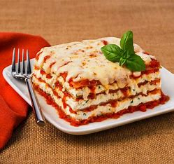

Back to Homepage
Lasagna Recipe

Description
Lasagna, lasagna. How I love thee! It is possibly one of the most loved foods in the whole wide world, and understandably so. There is just something so sentimental about lasagna, so comforting. It evokes images of of gatherings with family and friends all around the world. It is the sort of food that is like a big warm hug, and so more-ish you want to keep digging in until you burst.
Ingredients
- Some Dough
- 1kg Flour
- 10 pcs Tomato
- 500g Butter
- 500g Cheese
Steps
- Smear a bit of meat sauce on the base first – stops the lasagna sheets from sliding around
- Layer 1 – top with meat sauce, bit of white sauce
- Layer 2 – lay out more lasagna sheets, then top with more meat sauce and more white sauce
- Layer 3 – repeat again, lasagna sheets, meat sauce then white sauce
- Topping – cover with lasagna sheets, pour over remaining white sauce then sprinkle with cheese.